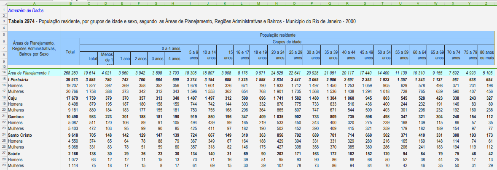

4 Limpeza, manipulação e transformação dos dados
Dados podem ser organizados de diversas formas. No campo da Epidemiologia, o formato mais comum é o tabular. Porém, muitas vezes nos deparamos com “tabelas” que não estão no formato adequado para a análise e produção de gráficos. Veja a planilha abaixo, por exemplo:

Observe que:
- Existem linhas com texto antes do início da tabela
- Existem células mescladas
- Cada linha representa coisas diferentes, como uma AP, uma região administrativa, um bairro, e sexo
- As colunas representam uma mesma variável (população residente) para cada faixa etária, mas incluindo também uma coluna para o total e para o total de 0 a 4 anos
- Tem mais de uma coluna com o mesmo nome (“Total”)
- Os nomes das colunas são longos demais e/ou tem espaços
- Algumas colunas tem nomes que começam com numeral
Que tipos de problemas podemos ter ao tentar abrir uma planilha dessas no R?
Imediatamente pensamos que o R não conseguirá identificar corretamente os nomes das colunas.
E para as análises? Vamos supor que você queira calcular a população de 80 anos ou mais do Rio de Janeiro. Se você fizesse um sum() da coluna “80 anos ou mais”, o resultado estaria correto? Por que?
Agora conseguimos entender a importância de ter os dados arrumados! Para isso, podemos contar com o tidyverse, que possui funções poderosas e permitem um fluxo intuitivo para tornar os dados tidy (organizados). Vamos relembrar a filosofia da tidy data:
- Cada variável é uma coluna; cada coluna é uma variável.
- Cada observação é uma linha; cada linha é uma observação.
- Cada valor é uma célula; cada célula é um único valor.
Assim, o conjunto de linhas forma uma tabela.
 Crédito: R para Ciência de dados (2ª edição), por Wickham, Çetinkaya-Rundel, e Grolemund.
Crédito: R para Ciência de dados (2ª edição), por Wickham, Çetinkaya-Rundel, e Grolemund.
Os principais pacotes do tidyverse que são empregados para arrumar dados são o tidyr e o dplyr. Vamos conhecer um pouco deles a seguir. Mas primeiro, vamos voltar ao tibble e conhecê-lo um pouco melhor e usar o readr para importar dados.
4.1 Criando uma tabela com tibble

Uma tibble (tbl_df) é uma classe de objeto criada como um data.frame mais moderno, mantendo o que ele tem de positivo e mudando aspectos que os autores julgaram obsoletos ou não funcionais. Ele não substitui todos os métodos providos pelo data.frame. No entanto, o tibble é mais rápido e possui métodos aprimorados e mais modernos, seguros para utilizar e exibir tabelas, e compatível com os pacotes e funções dentro do tidyverse. Saiba mais AQUI.
Vamos abaixo criar um tibble:
library(tidyverse)
IMC <- tibble(
nomes = c("João", "Maria", "Carlos", "Ana"),
idade = as.integer(c(27, 25, 29, 26)),
sexo = as.factor(c('M','F','M','F')),
altura = c(180, 170, 185, 169),
peso = c(92.3,71.1,88.5,63.6),
dt_nasc = lubridate::dmy(c('03/08/1990','15/12/1992','05-07-1988','06-08-1991')) ,
exercicio = c(TRUE, FALSE, FALSE, TRUE)
)O comando acima usa a função tibble() para criar um tibble a partir de vetores, similar ao que faríamos com data.frame().
Vamos verificar agora o conteúdo desse objeto:
IMC
# A tibble: 4 × 7
nomes idade sexo altura peso dt_nasc exercicio
<chr> <int> <fct> <dbl> <dbl> <date> <lgl>
1 João 27 M 180 92.3 1990-08-03 TRUE
2 Maria 25 F 170 71.1 1992-12-15 FALSE
3 Carlos 29 M 185 88.5 1988-07-05 FALSE
4 Ana 26 F 169 63.6 1991-08-06 TRUE Note que em primeiro lugar no output já nos é informado que o objeto é um tibble com 4 linhas e 7 colunas. Abaixo do nome de cada coluna temos o tipo da variável, se é caractere, numérico (double ou integer), fator, data ou lógico. Outra característica importante é que por padrão nenhum caractere é convertido para fator como acontece quando se usa data.frame().
Vamos ver a classe a que pertence esse objeto:
class(IMC)
[1] "tbl_df" "tbl" "data.frame"Repare que ele também pertence a classe data.frame, assim a grande maioria das funções que usamos para manusear objetos da classe data.frame podem ser empregados também na classe tbl_df (com algumas diferenças).
Para ilustrar as similaridades, vamos em primeiro lugar converter um data.frame e criar um objeto tibble.
iris_tb <- as_tibble(iris)
class(iris_tb)
[1] "tbl_df" "tbl" "data.frame"Vamos testar a indexação de ambas as classes
# data.frame
iris$Species
[1] setosa setosa setosa setosa setosa setosa setosa setosa setosa setosa
[11] setosa setosa setosa setosa setosa setosa setosa setosa setosa setosa
[21] setosa setosa setosa setosa setosa setosa setosa setosa setosa setosa
[31] setosa setosa setosa setosa setosa setosa setosa setosa setosa setosa
[41] setosa setosa setosa setosa setosa setosa setosa setosa setosa setosa
[51] versicolor versicolor versicolor versicolor versicolor versicolor versicolor versicolor versicolor versicolor
[61] versicolor versicolor versicolor versicolor versicolor versicolor versicolor versicolor versicolor versicolor
[71] versicolor versicolor versicolor versicolor versicolor versicolor versicolor versicolor versicolor versicolor
[81] versicolor versicolor versicolor versicolor versicolor versicolor versicolor versicolor versicolor versicolor
[91] versicolor versicolor versicolor versicolor versicolor versicolor versicolor versicolor versicolor versicolor
[101] virginica virginica virginica virginica virginica virginica virginica virginica virginica virginica
[111] virginica virginica virginica virginica virginica virginica virginica virginica virginica virginica
[121] virginica virginica virginica virginica virginica virginica virginica virginica virginica virginica
[131] virginica virginica virginica virginica virginica virginica virginica virginica virginica virginica
[141] virginica virginica virginica virginica virginica virginica virginica virginica virginica virginica
Levels: setosa versicolor virginica
# tibble
iris_tb$Species
[1] setosa setosa setosa setosa setosa setosa setosa setosa setosa setosa
[11] setosa setosa setosa setosa setosa setosa setosa setosa setosa setosa
[21] setosa setosa setosa setosa setosa setosa setosa setosa setosa setosa
[31] setosa setosa setosa setosa setosa setosa setosa setosa setosa setosa
[41] setosa setosa setosa setosa setosa setosa setosa setosa setosa setosa
[51] versicolor versicolor versicolor versicolor versicolor versicolor versicolor versicolor versicolor versicolor
[61] versicolor versicolor versicolor versicolor versicolor versicolor versicolor versicolor versicolor versicolor
[71] versicolor versicolor versicolor versicolor versicolor versicolor versicolor versicolor versicolor versicolor
[81] versicolor versicolor versicolor versicolor versicolor versicolor versicolor versicolor versicolor versicolor
[91] versicolor versicolor versicolor versicolor versicolor versicolor versicolor versicolor versicolor versicolor
[101] virginica virginica virginica virginica virginica virginica virginica virginica virginica virginica
[111] virginica virginica virginica virginica virginica virginica virginica virginica virginica virginica
[121] virginica virginica virginica virginica virginica virginica virginica virginica virginica virginica
[131] virginica virginica virginica virginica virginica virginica virginica virginica virginica virginica
[141] virginica virginica virginica virginica virginica virginica virginica virginica virginica virginica
Levels: setosa versicolor virginica# data.frame
iris[[4]]
[1] 0.2 0.2 0.2 0.2 0.2 0.4 0.3 0.2 0.2 0.1 0.2 0.2 0.1 0.1 0.2 0.4 0.4 0.3 0.3 0.3 0.2 0.4 0.2 0.5 0.2 0.2 0.4 0.2 0.2
[30] 0.2 0.2 0.4 0.1 0.2 0.2 0.2 0.2 0.1 0.2 0.2 0.3 0.3 0.2 0.6 0.4 0.3 0.2 0.2 0.2 0.2 1.4 1.5 1.5 1.3 1.5 1.3 1.6 1.0
[59] 1.3 1.4 1.0 1.5 1.0 1.4 1.3 1.4 1.5 1.0 1.5 1.1 1.8 1.3 1.5 1.2 1.3 1.4 1.4 1.7 1.5 1.0 1.1 1.0 1.2 1.6 1.5 1.6 1.5
[88] 1.3 1.3 1.3 1.2 1.4 1.2 1.0 1.3 1.2 1.3 1.3 1.1 1.3 2.5 1.9 2.1 1.8 2.2 2.1 1.7 1.8 1.8 2.5 2.0 1.9 2.1 2.0 2.4 2.3
[117] 1.8 2.2 2.3 1.5 2.3 2.0 2.0 1.8 2.1 1.8 1.8 1.8 2.1 1.6 1.9 2.0 2.2 1.5 1.4 2.3 2.4 1.8 1.8 2.1 2.4 2.3 1.9 2.3 2.5
[146] 2.3 1.9 2.0 2.3 1.8
# tibble
iris_tb[[4]]
[1] 0.2 0.2 0.2 0.2 0.2 0.4 0.3 0.2 0.2 0.1 0.2 0.2 0.1 0.1 0.2 0.4 0.4 0.3 0.3 0.3 0.2 0.4 0.2 0.5 0.2 0.2 0.4 0.2 0.2
[30] 0.2 0.2 0.4 0.1 0.2 0.2 0.2 0.2 0.1 0.2 0.2 0.3 0.3 0.2 0.6 0.4 0.3 0.2 0.2 0.2 0.2 1.4 1.5 1.5 1.3 1.5 1.3 1.6 1.0
[59] 1.3 1.4 1.0 1.5 1.0 1.4 1.3 1.4 1.5 1.0 1.5 1.1 1.8 1.3 1.5 1.2 1.3 1.4 1.4 1.7 1.5 1.0 1.1 1.0 1.2 1.6 1.5 1.6 1.5
[88] 1.3 1.3 1.3 1.2 1.4 1.2 1.0 1.3 1.2 1.3 1.3 1.1 1.3 2.5 1.9 2.1 1.8 2.2 2.1 1.7 1.8 1.8 2.5 2.0 1.9 2.1 2.0 2.4 2.3
[117] 1.8 2.2 2.3 1.5 2.3 2.0 2.0 1.8 2.1 1.8 1.8 1.8 2.1 1.6 1.9 2.0 2.2 1.5 1.4 2.3 2.4 1.8 1.8 2.1 2.4 2.3 1.9 2.3 2.5
[146] 2.3 1.9 2.0 2.3 1.8# data.frame
iris[['Species']]
[1] setosa setosa setosa setosa setosa setosa setosa setosa setosa setosa
[11] setosa setosa setosa setosa setosa setosa setosa setosa setosa setosa
[21] setosa setosa setosa setosa setosa setosa setosa setosa setosa setosa
[31] setosa setosa setosa setosa setosa setosa setosa setosa setosa setosa
[41] setosa setosa setosa setosa setosa setosa setosa setosa setosa setosa
[51] versicolor versicolor versicolor versicolor versicolor versicolor versicolor versicolor versicolor versicolor
[61] versicolor versicolor versicolor versicolor versicolor versicolor versicolor versicolor versicolor versicolor
[71] versicolor versicolor versicolor versicolor versicolor versicolor versicolor versicolor versicolor versicolor
[81] versicolor versicolor versicolor versicolor versicolor versicolor versicolor versicolor versicolor versicolor
[91] versicolor versicolor versicolor versicolor versicolor versicolor versicolor versicolor versicolor versicolor
[101] virginica virginica virginica virginica virginica virginica virginica virginica virginica virginica
[111] virginica virginica virginica virginica virginica virginica virginica virginica virginica virginica
[121] virginica virginica virginica virginica virginica virginica virginica virginica virginica virginica
[131] virginica virginica virginica virginica virginica virginica virginica virginica virginica virginica
[141] virginica virginica virginica virginica virginica virginica virginica virginica virginica virginica
Levels: setosa versicolor virginica
# tibble
iris_tb[['Species']]
[1] setosa setosa setosa setosa setosa setosa setosa setosa setosa setosa
[11] setosa setosa setosa setosa setosa setosa setosa setosa setosa setosa
[21] setosa setosa setosa setosa setosa setosa setosa setosa setosa setosa
[31] setosa setosa setosa setosa setosa setosa setosa setosa setosa setosa
[41] setosa setosa setosa setosa setosa setosa setosa setosa setosa setosa
[51] versicolor versicolor versicolor versicolor versicolor versicolor versicolor versicolor versicolor versicolor
[61] versicolor versicolor versicolor versicolor versicolor versicolor versicolor versicolor versicolor versicolor
[71] versicolor versicolor versicolor versicolor versicolor versicolor versicolor versicolor versicolor versicolor
[81] versicolor versicolor versicolor versicolor versicolor versicolor versicolor versicolor versicolor versicolor
[91] versicolor versicolor versicolor versicolor versicolor versicolor versicolor versicolor versicolor versicolor
[101] virginica virginica virginica virginica virginica virginica virginica virginica virginica virginica
[111] virginica virginica virginica virginica virginica virginica virginica virginica virginica virginica
[121] virginica virginica virginica virginica virginica virginica virginica virginica virginica virginica
[131] virginica virginica virginica virginica virginica virginica virginica virginica virginica virginica
[141] virginica virginica virginica virginica virginica virginica virginica virginica virginica virginica
Levels: setosa versicolor virginicaComo se pode notar o comportamento foi idêntico entre ambas as classes. Agora vejamos o que acontece abaixo:
iris$Sepal.L
[1] 5.1 4.9 4.7 4.6 5.0 5.4 4.6 5.0 4.4 4.9 5.4 4.8 4.8 4.3 5.8 5.7 5.4 5.1 5.7 5.1 5.4 5.1 4.6 5.1 4.8 5.0 5.0 5.2 5.2
[30] 4.7 4.8 5.4 5.2 5.5 4.9 5.0 5.5 4.9 4.4 5.1 5.0 4.5 4.4 5.0 5.1 4.8 5.1 4.6 5.3 5.0 7.0 6.4 6.9 5.5 6.5 5.7 6.3 4.9
[59] 6.6 5.2 5.0 5.9 6.0 6.1 5.6 6.7 5.6 5.8 6.2 5.6 5.9 6.1 6.3 6.1 6.4 6.6 6.8 6.7 6.0 5.7 5.5 5.5 5.8 6.0 5.4 6.0 6.7
[88] 6.3 5.6 5.5 5.5 6.1 5.8 5.0 5.6 5.7 5.7 6.2 5.1 5.7 6.3 5.8 7.1 6.3 6.5 7.6 4.9 7.3 6.7 7.2 6.5 6.4 6.8 5.7 5.8 6.4
[117] 6.5 7.7 7.7 6.0 6.9 5.6 7.7 6.3 6.7 7.2 6.2 6.1 6.4 7.2 7.4 7.9 6.4 6.3 6.1 7.7 6.3 6.4 6.0 6.9 6.7 6.9 5.8 6.8 6.7
[146] 6.7 6.3 6.5 6.2 5.9
iris_tb$Sepal.L
NULL
Warning:
Unknown or uninitialised column: `Sepal.L`. O que aconteceu? Você sabe explicar?
Com um
data.framepodemos nos referir ao nome de uma coluna de uma maneira parcial, desde que o nome seja inequívoco, no exemplo acimairis$Sepal.Lmostra somente a colunaSepal.Length, no entanto essa maneira não funciona nos objetostibble.
Uma outra diferença importante está no fato de que se pedirmos uma coluna inexistente a um data.frame, ele retorna NULL, no entanto não há nenhum erro e nem warning. Já o tibble retorna NULL e gera um warning, o que é importante quando estamos desenvolvendo funções.
iris$z # retorna NULL e não gera warning
NULL
iris_tb$z # Warning
NULL
Warning:
Unknown or uninitialised column: `z`.Além da função tibble(), existe a função tribble() (abreviação de transposed tibble) que permite criar um tibble linha por linha:
zika <- tribble(
~UF, ~Casos, ~Incidencia,
"MG", 15211, 72.9,
"ES", 2321, 59.1,
"RJ", 67481, 407.7,
"SP", 5612, 12.6
)
zika
# A tibble: 4 × 3
UF Casos Incidencia
<chr> <dbl> <dbl>
1 MG 15211 72.9
2 ES 2321 59.1
3 RJ 67481 408.
4 SP 5612 12.6Repare que ao invés de especificarmos as variáveis, entramos com cada linha, sendo que a primeira linha deve ter o nome de cada coluna precedida por um ~ (til).
Para vermos a estrutura dos dados podemos usar a função glimpse() que é a correspondente a função str() do módulo base.
glimpse(zika)
Rows: 4
Columns: 3
$ UF <chr> "MG", "ES", "RJ", "SP"
$ Casos <dbl> 15211, 2321, 67481, 5612
$ Incidencia <dbl> 72.9, 59.1, 407.7, 12.6Apesar de não existirem grandes diferenças entre data.frame e tibble, a velocidade, segurança e facilidades na visualização, além do fato de pertencer ao tidyverse e seu ecossistema de pacotes, são bons motivos para sua utilização.
4.2 Importando dados com o readr

O readr é o pacote do tidyverse responsável por prover maneiras rápidas e amigáveis para importar dados tabulares no R de diversos formatos (como csv, tsv e fwf). Suas funções são desenhadas com flexibilidade para identificar os tipos de cada coluna e facilitar a identificação de problemas dentro dos dados.
O processo de importação de dados passa por 3 estágios básicos:
- Leitura em um formato “retangular”, ou seja uma matriz de strings
- Determinação do tipo de cada coluna (numérico, data)
- Transformações necessárias a cada coluna dado seu tipo (exemplo: conversão de string para numérico)
O pacote readr faz isso de uma maneira muito mais rápida que as tracionais funções do pacote básico do R. Além do mais, permite facilmente especificar o formato das colunas de uma maneira mais simples e precisa.
As pricipais funções do readr para ler dados são:
read_table(): para colunas separadas por espaçoread_csv()eread_csv2(): para arquivos do tipo .csv com colunas separadas por ‘,’ e ‘;’, respectivamenteread_tsv(): para arquivos tsv (tab-separated values), separados por tabulação (read_fwf(): para arquivos com formato fixo (fixed-width format)read_delim(): genérica, para quando o delimitador não é ‘,’, ‘;’, espaço ou tab. Deve-se especificar o delimitador.
Todas as funções possuem diversas opções de parâmetros para melhor especificar o formato dos dados e importam os dados no formato tibble. Existem também todas as funções correspondente para salvar os dados (exemplo write_csv()). Saiba mais sobre o pacote readr AQUI.
4.2.1 Exemplo com TabNet
Muitas vezes trabalhamos com dados públicos de vigilância obtidos através do TabNet. Vamos então fazer o passo a passo desde a obtenção deste dados!
Para servir de exemplo, vamos pegar os dados de casos de AIDS no Brasil, que podem ser acessados aqui. Tratam-se de casos de AIDS notificados no SINAN, declarados no SIM e registrados no SISCEL/SILCOM.
Vamos selecionar para Linha o Munícipio de Residência, e para Coluna o ano de diagnóstico, e vamos selecionar todos os períodos disponíveis. 
A tela seguinte dese se parecer com:

Role para baixo e baixe o arquivo .csv. Para fins deste exemplo, vamos chamá-lo de aids_1980-2024.csv.
Agora vamos importar este arquivo!
Este é um csv delimitado por “;”, então devemos usar a função read_csv2():
aids <- read_csv2('aids_1980-2024.csv')
ℹ Using "','" as decimal and "'.'" as grouping mark. Use `read_delim()` for more control.
Rows: 5504 Columns: 1
── Column specification ────────────────────────────────────────────────────────────────────────────────────────────────────────────────────────────────────────────
Delimiter: ";"
chr (1): Casos de aids identificados no Brasil
ℹ Use `spec()` to retrieve the full column specification for this data.
ℹ Specify the column types or set `show_col_types = FALSE` to quiet this message.
Warning:
One or more parsing issues, call `problems()` on your data frame for details, e.g.:
dat <- vroom(...)
problems(dat) Opa! Recebemos de uma mensagem de erro! Além disso, o objeto ficou com somente uma coluna. Vamos inspecioná-lo:
aids
# A tibble: 5,504 × 1
`Casos de aids identificados no Brasil`
<chr>
1 "Freq\xfc\xeancia por Munic\xedpio (Res) e Ano Diagn\xf3stico"
2 "Per\xedodo:1980,1982-2024"
3 "Munic\xedpio (Res);1980;1982;1983;1984;1985;1986;1987;1988;1989;1990;1991;1992;1993;1994;1995;1996;1997;1998;1999;2000;2001;2002;2003;2004;2005;2006;2007;2008;…
4 "110001 Alta Floresta D'Oeste;0;0;0;0;0;0;0;0;0;0;0;0;0;0;0;0;0;1;0;0;0;0;1;1;0;1;2;1;0;1;3;1;2;2;0;0;1;1;0;1;0;2;5;0;26"
5 "110037 Alto Alegre dos Parecis;0;0;0;0;0;0;0;0;0;0;0;0;0;0;0;0;0;0;0;0;0;0;0;1;2;0;0;0;0;2;0;0;0;0;0;0;0;0;0;0;0;0;2;0;7"
6 "110040 Alto Para\xedso;0;0;0;0;0;0;0;0;0;0;0;0;0;0;1;0;0;0;0;0;0;0;0;1;5;0;1;4;3;5;2;3;1;1;1;1;0;1;1;0;1;1;2;0;35"
7 "110034 Alvorada D'Oeste;0;0;0;0;0;0;0;0;0;0;0;0;0;0;0;0;0;0;0;0;0;0;0;1;0;0;0;0;2;0;3;0;0;0;2;1;0;2;0;0;2;0;0;0;13"
8 "110002 Ariquemes;0;0;0;0;0;0;0;0;0;0;1;0;1;1;0;3;1;0;3;3;5;10;7;14;16;13;15;13;16;20;45;30;24;21;24;23;23;24;20;25;25;16;38;12;492"
9 "110045 Buritis;0;0;0;0;0;0;0;0;0;0;0;0;0;0;0;0;0;0;0;0;0;0;4;3;3;0;5;3;2;1;2;3;8;1;5;1;0;2;2;2;3;3;5;1;59"
10 "110003 Cabixi;0;0;0;0;0;0;0;0;0;0;0;0;0;0;0;0;0;2;0;0;0;0;0;0;1;0;0;0;0;0;0;0;0;0;0;0;2;0;0;0;2;1;0;0;8"
# ℹ 5,494 more rows
# ℹ Use `print(n = ...)` to see more rowsQue problemas podemos identificar? Como podemos resolvê-los?
| Exemplo no dado | Problema identificado | Solução |
|---|---|---|
Casos de aids identificados no Brasil <chr> |
Cabeçalho original foi interpretado como nome da única coluna identificada | Pular linhas do cabeçalho, usando o argumento skip |
Primeiras linhas: "Freq…", "Período:1980,1982-2024" |
Mais linhas de cabeçalho, agora lidas como observações da variável Casos… |
Usar argumento skip = 3 para ignorar as 3 linhas de cabeçalho. |
"Freq\xfc\xeancia por Munic\xedpio (Res) e Ano Diagn\xf3stico" |
Encoding errado, acentuação e caracteres especiais quebrados | Usar locale(encoding = "latin1") ao ler o arquivo. |
Vamos tentar!
aids <- read_csv2('aids_1980-2024.csv',
skip = 3,
locale=locale(encoding='latin1'))
ℹ Using "','" as decimal and "'.'" as grouping mark. Use `read_delim()` for more control.
Rows: 5501 Columns: 46
── Column specification ─────────────────────────────────────────────────────
Delimiter: ";"
chr (1): Município (Res)
dbl (45): 1980, 1982, 1983, 1984, 1985, 1986, 1987, 1988, 1989, 1990, 199...
ℹ Use `spec()` to retrieve the full column specification for this data.
ℹ Specify the column types or set `show_col_types = FALSE` to quiet this message.
aids
# A tibble: 5,501 × 46
`Município (Res)` `1980` `1982` `1983` `1984` `1985` `1986` `1987` `1988`
<chr> <dbl> <dbl> <dbl> <dbl> <dbl> <dbl> <dbl> <dbl>
1 110001 Alta Flore… 0 0 0 0 0 0 0 0
2 110037 Alto Alegr… 0 0 0 0 0 0 0 0
3 110040 Alto Paraí… 0 0 0 0 0 0 0 0
4 110034 Alvorada D… 0 0 0 0 0 0 0 0
5 110002 Ariquemes 0 0 0 0 0 0 0 0
6 110045 Buritis 0 0 0 0 0 0 0 0
7 110003 Cabixi 0 0 0 0 0 0 0 0
8 110060 Cacaulândia 0 0 0 0 0 0 0 0
9 110004 Cacoal 0 0 0 0 0 0 0 0
10 110070 Campo Novo… 0 0 0 0 0 0 0 0
# ℹ 5,491 more rows
# ℹ 37 more variables: `1989` <dbl>, `1990` <dbl>, `1991` <dbl>,
# `1992` <dbl>, `1993` <dbl>, `1994` <dbl>, `1995` <dbl>, `1996` <dbl>,
# `1997` <dbl>, `1998` <dbl>, `1999` <dbl>, `2000` <dbl>, `2001` <dbl>,
# `2002` <dbl>, `2003` <dbl>, `2004` <dbl>, `2005` <dbl>, `2006` <dbl>,
# `2007` <dbl>, `2008` <dbl>, `2009` <dbl>, `2010` <dbl>, `2011` <dbl>,
# `2012` <dbl>, `2013` <dbl>, `2014` <dbl>, `2015` <dbl>, `2016` <dbl>, …
# ℹ Use `print(n = ...)` to see more rowsParece que está tudo OK! E a função parece ter identificado corretamente o tipo das variáveis. Se não fosse o caso, poderíamos espeficar usando o argumento col_types.
MAS este é um dado tidy? Vamos, então, usar o próximo pacote para a arrumação destes dados!
4.3 Transformando a estrutura dos dados com tidyr

O tidyr é o pacote do tidyverse focado em ajudar a transformar os dados para o formato tidy (arrumado). As principais funções são:
pivot_longer(): colapsa as colunas para linhaspivot_wider(): transforma linhas em colunasseparate_wider_position()eseparate_wider_delim(): separa uma coluna em múltiplasunite(): une várias colunas em uma
Saiba mais sobre o tidyr AQUI.
De cara, já conseguiu identificar que funções podemos aplicar aos dados aids? Vamos começar!
4.3.1 pivot_longer()
Podemos transformar as diversas colunas contendo indicadores em duas, uma contendo o nome do indicador e a outra o valor. Para isso usaremos a função pivot_longer().
Como vimos antes, em um dado tidy cada variável é uma coluna. No entanto, temos em várias colunas a informação de número de casos notificados de aids, sendo uma para cada ano. Vamos usar esta função para corrigir isso:
aids.longo <- aids %>%
pivot_longer(
cols = -`Município (Res)`,
names_to = "ano",
values_to = "casos"
)
aids.longo
# A tibble: 247,545 × 3
`Município (Res)` ano casos
<chr> <chr> <dbl>
1 110001 Alta Floresta D'Oeste 1980 0
2 110001 Alta Floresta D'Oeste 1982 0
3 110001 Alta Floresta D'Oeste 1983 0
4 110001 Alta Floresta D'Oeste 1984 0
5 110001 Alta Floresta D'Oeste 1985 0
6 110001 Alta Floresta D'Oeste 1986 0
7 110001 Alta Floresta D'Oeste 1987 0
8 110001 Alta Floresta D'Oeste 1988 0
9 110001 Alta Floresta D'Oeste 1989 0
10 110001 Alta Floresta D'Oeste 1990 0
# ℹ 247,535 more rows
# ℹ Use `print(n = ...)` to see more rowsObserve que todas as colunas menos o município de residência foram colapsadas em duas variáveis, uma com o ano e outra com o número de casos.
Esse formato acima é o mais indicado para banco de dados e permite filtrar mais rapidamente, por exemplo, um indicador que você deseja. Esse também é o formato que a ggplot() gosta que os dados estejam!
4.3.2 pivot_wider()
Em algumas situações, por exemplo, para fazer um modelo GLM, é mais cômodo que os dados esteja em colunas distintas. Podemos usar, então, a função pivot_wider() para tornar os dados largos. Veja no exemplo abaixo como retornar ao formato original:
aids.longo %>%
pivot_wider(
names_from = ano,
values_from = casos
)
# A tibble: 5,501 × 46
`Município (Res)` `1980` `1982` `1983` `1984` `1985` `1986` `1987` `1988` `1989`
<chr> <dbl> <dbl> <dbl> <dbl> <dbl> <dbl> <dbl> <dbl> <dbl>
1 110001 Alta Flores… 0 0 0 0 0 0 0 0 0
2 110037 Alto Alegre… 0 0 0 0 0 0 0 0 0
3 110040 Alto Paraíso 0 0 0 0 0 0 0 0 0
4 110034 Alvorada D'… 0 0 0 0 0 0 0 0 0
5 110002 Ariquemes 0 0 0 0 0 0 0 0 0
6 110045 Buritis 0 0 0 0 0 0 0 0 0
7 110003 Cabixi 0 0 0 0 0 0 0 0 0
8 110060 Cacaulândia 0 0 0 0 0 0 0 0 0
9 110004 Cacoal 0 0 0 0 0 0 0 0 0
10 110070 Campo Novo … 0 0 0 0 0 0 0 0 0
# ℹ 5,491 more rows
# ℹ 36 more variables: `1990` <dbl>, `1991` <dbl>, `1992` <dbl>, `1993` <dbl>,
# `1994` <dbl>, `1995` <dbl>, `1996` <dbl>, `1997` <dbl>, `1998` <dbl>,
# `1999` <dbl>, `2000` <dbl>, `2001` <dbl>, `2002` <dbl>, `2003` <dbl>,
# `2004` <dbl>, `2005` <dbl>, `2006` <dbl>, `2007` <dbl>, `2008` <dbl>,
# `2009` <dbl>, `2010` <dbl>, `2011` <dbl>, `2012` <dbl>, `2013` <dbl>,
# `2014` <dbl>, `2015` <dbl>, `2016` <dbl>, `2017` <dbl>, `2018` <dbl>, …4.3.3 separate_wider_position() e separate_wider_delim()
Repare que a coluna Município (Res) possui dois tipos de informação: o código do município e o nome do município. É útil ter essas informações separadas, por exemplo, para usar o código do município como chave para juntar com outras tabelas, e para usar o nome do município como rótulo (label) de gráficos.
A função separate_wider_delim() permite separar a coluna especificando um delimitador, enquanto a separate_wider_position() separa especificando um cumprimento fixo.
Vamos tentar usando a separate_wider_delim(). Como temos mais de um ” ” na variável, precisamos incluir o argumento too_many = 'merge para unir os demais “pedaços”:
aids.longo %>%
separate_wider_delim(cols = `Município (Res)`,
names = c("cod_mun_res", "mun_res"),
delim = " ", too_many = "merge")
Error in `separate_wider_delim()`:
! Expected 2 pieces in each element of `Município (Res)`.
! 45 values were too short.
ℹ Use `too_few = "debug"` to diagnose the problem.
ℹ Use `too_few = "align_start"/"align_end"` to silence this message.
Run `rlang::last_trace()` to see where the error occurred.Recebemos um aviso de erro! Vamos lê-lo com calma. Nós consideramos a existência de mais de um espaço na variável, mas aparentemente tem valores com nenhum espaço! Neste caso, a mensagem sugere usar too_few = "debug" para investigar melhor o problema. Tentem fazer isso em casa!
Vamos adiantar e incluir a opção too_few = "align_end":
aids.longo <- aids.longo %>%
separate_wider_delim(cols = `Município (Res)`,
names = c("cod_mun_res", "mun_res"),
delim = " ",
too_many = "merge",
too_few = "align_end") Não houve mensagem de aviso. Vamos inspecionar o objeto:
aids.longo
# A tibble: 247,545 × 4
cod_mun_res mun_res ano casos
<chr> <chr> <chr> <dbl>
1 110001 Alta Floresta D'Oeste 1980 0
2 110001 Alta Floresta D'Oeste 1982 0
3 110001 Alta Floresta D'Oeste 1983 0
4 110001 Alta Floresta D'Oeste 1984 0
5 110001 Alta Floresta D'Oeste 1985 0
6 110001 Alta Floresta D'Oeste 1986 0
7 110001 Alta Floresta D'Oeste 1987 0
8 110001 Alta Floresta D'Oeste 1988 0
9 110001 Alta Floresta D'Oeste 1989 0
10 110001 Alta Floresta D'Oeste 1990 0
# ℹ 247,535 more rows
# ℹ Use `print(n = ...)` to see more rows
tail(aids.longo)
# A tibble: 6 × 4
cod_mun_res mun_res ano casos
<chr> <chr> <chr> <dbl>
1 NA Total 2020 30684
2 NA Total 2021 35550
3 NA Total 2022 37049
4 NA Total 2023 37994
5 NA Total 2024 17884
6 NA Total Total 1165423Vejam o que causou o erro! Mais uma desconformidade em relação a dados tidy. A coluna original de Muncípio de residência não apenas representava seu código e nome, mas também o Total! Os dados originais também continham uma coluna “Total”, que acabou ficando transposta na variável que criamos “ano”. Vamos corrigir isso em breve usando funções do dplyr!
Agora vamos supor que quiséssemos separar os dois primeiros dígitos do código do munícipio em uma outra variável, representando o código da Unidade Federativa. Poderíamos fazer com separate_wider_position():
aids.separado <- aids2 %>%
separate_wider_position(cols = cod_mun_res,
widths = c(cod_uf_res = 2, cod_mun_res4 = 4),
too_few = "align_start")
aids.separado
# A tibble: 247,545 × 5
cod_uf_res cod_mun_res4 mun_res ano casos
<chr> <chr> <chr> <chr> <dbl>
1 11 0001 Alta Floresta D'Oeste 1980 0
2 11 0001 Alta Floresta D'Oeste 1982 0
3 11 0001 Alta Floresta D'Oeste 1983 0
4 11 0001 Alta Floresta D'Oeste 1984 0
5 11 0001 Alta Floresta D'Oeste 1985 0
6 11 0001 Alta Floresta D'Oeste 1986 0
7 11 0001 Alta Floresta D'Oeste 1987 0
8 11 0001 Alta Floresta D'Oeste 1988 0
9 11 0001 Alta Floresta D'Oeste 1989 0
10 11 0001 Alta Floresta D'Oeste 1990 0Perceba que como temos NA na coluna cod_mun_res, precisamos especificar too_few = "align_start", ou recebemos uma mensagem de erro.
IMPORTANTE! Essas funções estão em fase experimental para substituir a função separate, que está sendo descontinuada. Portanto, é provável que ainda passem por modificações.
4.3.4 unite()
A função unite() permite unir colunas usando um separador. Vamos voltar a unir o código da UF com o identificador de 4 dígitos do município para voltar a ter o seu código completo:
aids.separado %>%
unite("cod_mun_res", cod_uf_res:cod_mun_res4, sep = "")
# A tibble: 247,545 × 4
cod_mun_res mun_res ano casos
<chr> <chr> <chr> <dbl>
1 110001 Alta Floresta D'Oeste 1980 0
2 110001 Alta Floresta D'Oeste 1982 0
3 110001 Alta Floresta D'Oeste 1983 0
4 110001 Alta Floresta D'Oeste 1984 0
5 110001 Alta Floresta D'Oeste 1985 0
6 110001 Alta Floresta D'Oeste 1986 0
7 110001 Alta Floresta D'Oeste 1987 0
8 110001 Alta Floresta D'Oeste 1988 0
9 110001 Alta Floresta D'Oeste 1989 0
10 110001 Alta Floresta D'Oeste 1990 0
# ℹ 247,535 more rows
# ℹ Use `print(n = ...)` to see more rows4.4 Manipulando dados com dplyr

O dplyr é um poderoso pacote do tidyverse voltado para a manipulação de dados tabulares no R. Possui um conjunto de funções para filtrar, ordenar, resumir, agrupar, entre outras operações. Veja as principais abaixo:
| Função | O que faz | Exemplo |
|---|---|---|
filter() |
Filtra linhas que atendem a uma condição | filter(dados, idade > 30) |
select() |
Seleciona colunas específicas | select(dados, nome, idade) |
mutate() |
Cria ou modifica colunas | mutate(dados, idade_10 = idade + 10) |
arrange() |
Ordena linhas | arrange(dados, desc(idade)) |
summarise() / summarize() |
Calcula resumos (média, soma etc.) | summarise(dados, media_idade = mean(idade)) |
group_by() |
Agrupa dados para cálculos por grupo | group_by(dados, cidade) |
distinct() |
Retira linhas duplicadas | distinct(dados, cidade) |
rename() |
Renomeia colunas | rename(dados, nome_cidade = cidade) |
Para saber mais sobre o dplyr, clique AQUI.
Agora vamos usar essas funções para manipular os dados do exemplo anterior de casos notificados de AIDS, e de dados do censo.
4.4.1 filter()
Vamos usar a função filter(), que filtra as linhas que atendem o critério especificado. Veja:
aids.longo |>
filter(cod_mun_res == '261160')
# A tibble: 45 × 4
cod_mun_res mun_res ano casos
<chr> <chr> <chr> <dbl>
1 261160 Recife 1980 0
2 261160 Recife 1982 0
3 261160 Recife 1983 1
4 261160 Recife 1984 1
5 261160 Recife 1985 7
6 261160 Recife 1986 14
7 261160 Recife 1987 66
8 261160 Recife 1988 90
9 261160 Recife 1989 164
10 261160 Recife 1990 106
# ℹ 35 more rows
# ℹ Use `print(n = ...)` to see more rowsCom o comando acima selecionamos apenas os casos notificados com residência em Recife. Podemos também combinar critérios, como, por exemplo:
aids.longo |>
filter(cod_mun_res == '261160', ano >= '2020')
# A tibble: 5 × 4
cod_mun_res mun_res ano casos
<chr> <chr> <chr> <dbl>
1 261160 Recife 2020 398
2 261160 Recife 2021 511
3 261160 Recife 2022 483
4 261160 Recife 2023 438
5 261160 Recife 2024 181A saída nos mostra quantos casos de AIDS por ano foram registrados em Recife de 2020 a 2024.
Repare que múltiplos critérios são equivalentes ao operador AND (&). Você pode utilizar o operador OU (“|”) para selecionar observações com um ou outro critério.
Lembrando os operadores lógicos e como usá-los no R:
| Operador Logico | R |
Significado |
|---|---|---|
| EQUAL | == | IGUAL |
| AND | & | E |
| OR | | | OU |
| XOR | xor() | OU EXCLUSIVO |
| NOT | ! | NÃO |
Retomando, a função filter() é útil tanto para filtrar apenas as observações de interesse de uma tabela, como também para realizar limpeza de dados importados, como no exemplo a seguir.
Lembra que nosso objeto aids.longo possui valores “Total” nas colunas mun_res e ano?
aids.longo |> tail()
# A tibble: 6 × 4
cod_mun_res mun_res ano casos
<chr> <chr> <chr> <dbl>
1 NA Total 2020 30684
2 NA Total 2021 35550
3 NA Total 2022 37049
4 NA Total 2023 37994
5 NA Total 2024 17884
6 NA Total Total 1165423Vamos usar filter() para excluir essas linhas da nossa tabela:
aids.longo <- aids.longo |>
filter(mun_res != "Total",
ano != "Total")
aids.longo |>
tail()
# A tibble: 6 × 4
cod_mun_res mun_res ano casos
<chr> <chr> <chr> <dbl>
1 530010 Brasília 2019 461
2 530010 Brasília 2020 385
3 530010 Brasília 2021 437
4 530010 Brasília 2022 423
5 530010 Brasília 2023 437
6 530010 Brasília 2024 176Pronto! Agora a nossa tabela está livre dos valores totais.
EXTRA: Você deve ter reparado que o dado pula de 1980 para 1981 nas primeiras obervações. Será que alguns municípios estão sem os dados de 1981? Podemos usar filter() para verificar:
aids.longo |>
filter(ano == 1981)
# A tibble: 0 × 4
# ℹ 4 variables: cod_mun_res <chr>, mun_res <chr>, ano <chr>, casos <dbl>Não tem nenhum município com dados de 1981! Aparentemente é um problema no TabNet, pois o ano de 1981 não aparece nas opções de Períodos Disponíveis.
4.4.2 select()
Agora vamos imaginar que eu queira uma tabela apenas com os códigos e nomes dos municípios que registraram ao menos 1 caso de AIDS em 2024. A função select() seleciona as colunas desejadas, e também especifica sua ordem de saída.
aids.longo |>
filter(casos > 0, ano == 2024, ) |>
select(mun_res, cod_mun_res)
# A tibble: 2,352 × 2
mun_res cod_mun_res
<chr> <chr>
1 Ariquemes 110002
2 Buritis 110045
3 Cacaulândia 110060
4 Cacoal 110004
5 Candeias do Jamari 110080
6 Cerejeiras 110005
7 Colorado do Oeste 110006
8 Espigão D'Oeste 110009
9 Guajará-Mirim 110010
10 Jaru 110011
# ℹ 2,342 more rows
# ℹ Use `print(n = ...)` to see more rowsPerceba que a ordem das colunas mudou para a ordem que aparecem dentro de select().
Também podemos usar select para excluir uma variável usando o sinal de menos “-”:
aids.longo |>
filter(casos > 0, ano == 2024, ) |>
select(-ano, - casos)
# A tibble: 2,352 × 2
cod_mun_res mun_res
<chr> <chr>
1 110002 Ariquemes
2 110045 Buritis
3 110060 Cacaulândia
4 110004 Cacoal
5 110080 Candeias do Jamari
6 110005 Cerejeiras
7 110006 Colorado do Oeste
8 110009 Espigão D'Oeste
9 110010 Guajará-Mirim
10 110011 Jaru
# ℹ 2,342 more rows
# ℹ Use `print(n = ...)` to see more rowsTambém é possível selecionar colunas em um intervalo usando “:” ou ainda usar a posição da coluna:
aids.longo |>
select (c(1,3,4))
# A tibble: 242,000 × 3
cod_mun_res ano casos
<chr> <chr> <dbl>
1 110001 1980 0
2 110001 1982 0
3 110001 1983 0
4 110001 1984 0
5 110001 1985 0
6 110001 1986 0
7 110001 1987 0
8 110001 1988 0
9 110001 1989 0
10 110001 1990 0
# ℹ 241,990 more rows
# ℹ Use `print(n = ...)` to see more rows4.4.3 summarise() ou summarize()
A função summarise() cria nova variável contendo uma estatística resumo para uma determinada coluna em um dado tabular.
Vamos criar algumas variáveis a partir da contagem de casos de AIDS:
aids.longo |>
summarise(media_casos = mean(casos),
mediana_casos = median(casos),
max_casos = max(casos),
min_casos = min(casos))
# A tibble: 1 × 4
media_casos mediana_casos max_casos min_casos
<dbl> <dbl> <dbl> <dbl>
1 4.82 0 5362 0A função summarise() atinge seu potencial máximo quando usada em conjunto com comandos de agrupamento como veremos a seguir.
4.4.4 group_by()
A função group_by() é uma função muito importante que nos permite agrupar os dados. Em conjunto com summarise(), permite a criação de novas tabelas obtidas da agregação de dados.
Vamos agrupar os dados de AIDS para todo o Brasil, por ano:
aids.longo |>
group_by(ano) |>
summarise(total_casos = sum(casos),
max_casos = max(casos),
media_casos = mean(casos)) |>
print(n=20)
# A tibble: 44 × 4
ano total_casos max_casos media_casos
<chr> <dbl> <dbl> <dbl>
1 1980 1 1 0.000182
2 1982 17 4 0.00309
3 1983 42 22 0.00764
4 1984 136 73 0.0247
5 1985 535 277 0.0973
6 1986 1121 492 0.204
7 1987 2708 1051 0.492
8 1988 4353 1673 0.791
9 1989 6019 2214 1.09
10 1990 8660 2749 1.57
11 1991 11534 3195 2.10
12 1992 14258 3881 2.59
13 1993 16429 3885 2.99
14 1994 18019 3967 3.28
15 1995 20795 4091 3.78
16 1996 23674 4399 4.30
17 1997 25914 4510 4.71
18 1998 28836 4696 5.24
19 1999 26471 4142 4.81
20 2000 36498 5362 6.64
# ℹ 24 more rows
# ℹ Use `print(n = ...)` to see more rowsNo código acima agrupamos os dados por ano e calculamos o total de casos, o valor máximo registrado naquele ano em um município, e a média de casos. Adiciomanos print(n=20) para mostrar 20 observações.
4.4.5 rename()
Vamos agora trabalhar com dados do SIDRA, mas especificamente a Tabela 9922 - Domicílios particulares permanentes ocupados segundo a situação urbana/rural, para a Região Geográfica Imediata N25.
Para baixar os dados da API do SIDRA, vamos precisar da biblioteca jasonlite:
library(jsonlite)
url <- "https://apisidra.ibge.gov.br/values/t/9922/p/2022/v/382/C1/1,2/N25/all?formato=json"
populacao <- fromJSON(url)
head(populacao)
NC NN MC MN
1 Nível Territorial (Código) Nível Territorial Unidade de Medida (Código) Unidade de Medida
2 25 Região Geográfica Imediata 45 Pessoas
3 25 Região Geográfica Imediata 45 Pessoas
4 25 Região Geográfica Imediata 45 Pessoas
5 25 Região Geográfica Imediata 45 Pessoas
6 25 Região Geográfica Imediata 45 Pessoas
V D1C D1N D2C D2N
1 Valor Ano (Código) Ano Variável (Código) Variável
2 494869 2022 2022 382 Moradores em domicílios particulares permanentes ocupados
3 132299 2022 2022 382 Moradores em domicílios particulares permanentes ocupados
4 64889 2022 2022 382 Moradores em domicílios particulares permanentes ocupados
5 209556 2022 2022 382 Moradores em domicílios particulares permanentes ocupados
6 208836 2022 2022 382 Moradores em domicílios particulares permanentes ocupados
D3C D3N D4C
1 Situação do domicílio (Código) Situação do domicílio Região Geográfica Imediata (Código)
2 1 Urbana 110001
3 1 Urbana 110002
4 1 Urbana 110003
5 1 Urbana 110004
6 1 Urbana 110005
D4N
1 Região Geográfica Imediata
2 Porto Velho
3 Ariquemes
4 Jaru
5 Ji-Paraná
6 CacoalPerceba que a primeira linha corresponde ao nome da variável, e não ao início dos valores da tabela. Vamos agora passar uma sequência de ações nesta tabela:
populacao <- populacao |>
tibble() |>
slice(-1) |>
select(D4C,D4N,D1C,D3N,V) |>
rename(
cod_regim = D4C,
nome_regim = D4N,
ano = D1C,
situacao = D3N,
pop = V
)Vamos analisar em partes: primeiro convertemos o objeto em um tibble, depois usamos uma função do dplyr chamada slice() para remover a primeira linha da tabela, selecionamos com select() as variáveis de interesse, e, finalmente, renomeamos as colunas com a função rename(). O objeto ficou assim:
populacao
# A tibble: 1,020 × 5
cod_regim nome_regim ano situacao pop
<chr> <chr> <chr> <chr> <chr>
1 110001 Porto Velho 2022 Urbana 494869
2 110002 Ariquemes 2022 Urbana 132299
3 110003 Jaru 2022 Urbana 64889
4 110004 Ji-Paraná 2022 Urbana 209556
5 110005 Cacoal 2022 Urbana 208836
6 110006 Vilhena 2022 Urbana 127611
7 120001 Rio Branco 2022 Urbana 389623
8 120002 Brasiléia 2022 Urbana 44719
9 120003 Sena Madureira 2022 Urbana 36506
10 120004 Cruzeiro do Sul 2022 Urbana 96652
# ℹ 1,010 more rows
# ℹ Use `print(n = ...)` to see more rows4.4.6 mutate()
A função mutate() permite a modificação da tabela de dados, criando ou modificando variáveis já existentes.
Na tabela populacao, a variável pop está com o tipo caractere. Vamos utilizar mutate() para transformar em numérico:
populacao <- populacao |>
mutate(pop = as.numeric(pop))
populacao
# A tibble: 1,020 × 5
cod_regim nome_regim ano situacao pop
<chr> <chr> <chr> <chr> <dbl>
1 110001 Porto Velho 2022 Urbana 494869
2 110002 Ariquemes 2022 Urbana 132299
3 110003 Jaru 2022 Urbana 64889
4 110004 Ji-Paraná 2022 Urbana 209556
5 110005 Cacoal 2022 Urbana 208836
6 110006 Vilhena 2022 Urbana 127611
7 120001 Rio Branco 2022 Urbana 389623
8 120002 Brasiléia 2022 Urbana 44719
9 120003 Sena Madureira 2022 Urbana 36506
10 120004 Cruzeiro do Sul 2022 Urbana 96652
# ℹ 1,010 more rows
# ℹ Use `print(n = ...)` to see more rowsAgora vamos supor que queremos calcular a população total e a porcentagem do total que é população urbana. Como podemos fazer isso?
populacao <- populacao |>
pivot_wider(names_from = situacao,
values_from = pop) |>
mutate(Total = Urbana+Rural,
pct_urb = Urbana/Total*100)
populacao
# A tibble: 510 × 7
cod_regim nome_regim ano Urbana Rural Total pct_urb
<chr> <chr> <chr> <dbl> <dbl> <dbl> <dbl>
1 110001 Porto Velho 2022 494869 57375 552244 89.6
2 110002 Ariquemes 2022 132299 50729 183028 72.3
3 110003 Jaru 2022 64889 39706 104595 62.0
4 110004 Ji-Paraná 2022 209556 79755 289311 72.4
5 110005 Cacoal 2022 208836 83625 292461 71.4
6 110006 Vilhena 2022 127611 23426 151037 84.5
7 120001 Rio Branco 2022 389623 63720 453343 85.9
8 120002 Brasiléia 2022 44719 26271 70990 63.0
9 120003 Sena Madureira 2022 36506 23074 59580 61.3
10 120004 Cruzeiro do Sul 2022 96652 56466 153118 63.1
# ℹ 500 more rows
# ℹ Use `print(n = ...)` to see more rows4.4.7 arrange()
A função arrange() altera a ordem que os registros (linhas) são armazenados (ou exibidas).
Vamos usar a função arrange() para ordenar os dados populacao pelo percentual de população urbana, do menor para o maior.
populacao |>
arrange(pct_urb)
# A tibble: 510 × 7
cod_regim nome_regim ano Urbana Rural Total pct_urb
<chr> <chr> <chr> <dbl> <dbl> <dbl> <dbl>
1 140002 Pacaraima 2022 13630 45038 58668 23.2
2 290026 Euclides da Cunha 2022 78469 109386 187855 41.8
3 210006 Barreirinhas 2022 49711 68923 118634 41.9
4 210007 Tutóia - Araioses 2022 73063 99512 172575 42.3
5 150020 Breves 2022 173837 231453 405290 42.9
6 230017 Acaraú 2022 98360 123339 221699 44.4
7 220010 Paulistana 2022 34849 43041 77890 44.7
8 220013 São Raimundo Nonato 2022 51690 60991 112681 45.9
9 210005 Viana 2022 114078 130074 244152 46.7
10 220005 Barras 2022 43510 49478 92988 46.8
# ℹ 500 more rows
# ℹ Use `print(n = ...)` to see more rowsPodemos fazer o inverso da seguinte maneira:
populacao |>
arrange(desc(pct_urb))
# A tibble: 510 × 7
cod_regim nome_regim ano Urbana Rural Total pct_urb
<chr> <chr> <chr> <dbl> <dbl> <dbl> <dbl>
1 330001 Rio de Janeiro 2022 11679151 28677 11707828 99.8
2 350001 São Paulo 2022 20492117 152219 20644336 99.3
3 350002 Santos 2022 1805518 13514 1819032 99.3
4 310001 Belo Horizonte 2022 4970615 48341 5018956 99.0
5 350038 Campinas 2022 2992359 36944 3029303 98.8
6 520001 Goiânia 2022 2490402 31480 2521882 98.8
7 270001 Maceió 2022 1241573 18145 1259718 98.6
8 260001 Recife 2022 3701809 61380 3763189 98.4
9 320001 Vitória 2022 1897827 32139 1929966 98.3
10 330013 Cabo Frio 2022 544206 9218 553424 98.3
# ℹ 500 more rows
# ℹ Use `print(n = ...)` to see more rows5 Exercícios
Tente fazer esses exercícios para ajudar a fixar o conteúdo.
- Leia a tabela abaixo:
“https://raw.githubusercontent.com/laispfreitas/curso_CD1/refs/heads/main/infarto_mulheres.csv”
- Separe o código do nome da UF
- Crie uma tabela que tenha
CODUF,UF,ANO,OBITOS - Quais são as UFs com mais de 1000 casos em 2010?
- Crie uma tabela com o número de casos agrupado por ano para todo o Brasil.
- Importe diretamente no
Ra tabela no endereço
“https://raw.githubusercontent.com/laispfreitas/curso_CD1/refs/heads/main/Tabela_Sidra_200.csv”
- Leia os dados e chame a tabela de
tab200. - Normalizar o nome das colunas
- Crie uma nova tabela que deve ter somente as seguintes colunas: nome da UF, ano do censo, sexo, faixa etária e total da população.
- Quais são as UF que tem mais de 5000 mulheres de mais de 90 anos em 2010?
- Retorne somente as faixas etárias entre 20 e 40 anos.
- Deixe o nome das variáveis mais “limpo” removendo a palavra ‘anos’ e substituindo mais por ‘+’.
DICA! Fica aqui um pedaço de função em REGEX para ajudar na limpeza:
gsub('(^[M|H])\\.([0-9]{4})\\.','\\1-\\2-FX_',name(tab200))- Volte ao exemplo da PNAD contínua:
“https://github.com/laispfreitas/curso_CD1/raw/refs/heads/main/PNAD_Continua_2012_2018_Caracteristicas_Gerais_RACA.xlsx”
Agora você deve ter conhecido todas as ferramentas necessárias para transformar essa planilha em dados tidy. Tente em casa! Vai ser importante para praticar, fixar o conteúdo, e encontrar dúvidas.